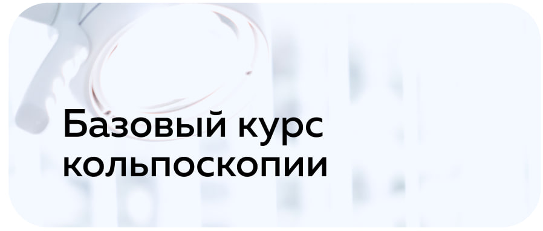

-
1
Общая характеристика программы - 2
Учебно-тематический план - 3
Содержание программы - 4
График занятий - 5
Кадровые условия -
6
Условия реализации программы -
7
Материально-технические условия -
8
Учебно-методическое и информационное обеспечение - 9
Галерея
Общая характеристика программы
Дополнительная профессиональная образовательная программа составлена на основании Федерального Закона от 29.12.2012 №273-ФЗ «Об образовании в Российской Федерации», Устава организации, Лицензии на осуществление образовательной деятельности № 07962 от 10 июня 2016 г. и Лицензии на осуществление медицинской деятельности № ЛО-23-01-006923 от 06 марта 2014 г.
Цель программы:
Повышение профессиональных теоретических и практических знаний и навыков врачей акушеров-гинекологов, с получением и совершенствованием новых компетенций...
Категория слушателей:
Врачи с базовым медицинским образованием 31.05.01, при наличии послевузовского профессионального образования по специальности 31.08.01 Акушерство и гинекология.
Задачи цикла:
- Изучение нормативных документов, регламентирующих работу врачей акушеров-гинекологов.
- Изучение принципов и стандартов кольпоскопического исследования.
- Изучение кольпоскопических картин при нормальных состояниях и заболеваниях шейки матки.
- Отработка практических навыков по работе на кольпоскопах.
- Изучение современных подходов к ведению пациенток с заболеваниями шейки матки, влагалища и вульвы.
Требования к результатам обучения:
В результате прохождения цикла слушатель должен:
- Усвоить минимальные требования для специалистов по кольпоскопии;
- Изучить современные взгляды на заболевания шейки матки;
- Освоить методику кольпоскопического исследования.
2
Содержание программы
Учебно-тематический план
лекции
практических занятий
часов
итоговая форма контроля
2 часа
Форма контроля
3 практических занятия
4 часа
Форма контроля
2 часа
Форма контроля
3 практических занятия
4 часа
Форма контроля
2 часа
Форма контроля
2 часа
Форма контроля
3 практических занятия
2 часа
Форма контроля
5 практических занятий
7 часов
Форма контроля
3 практических занятия
2 часа
Форма контроля
2 часа
Форма контроля
2 часа
Форма контроля
2 часа
Форма контроля
Учебно–тематический план
Организация помощи пациенткам с заболеваниями шейки матки
Заболевания шейки матки: актуальность проблемы.
История кольпоскопии и организации службы в России и зарубежных странах.
Организация работы гинекологического кабинета: алгоритмы действий и особенности оснащения.
Микроскопические и макроскопические особенности шейки матки
Анатомия, цитология и патология шейки матки.
Микроскопический и макроскопический анализ.
Гистологическая классификация и зоны трансформации.
Шейка матки при беременности в разные периоды жизни женщины.
Методы диагностики заболеваний шейки матки
Общие принципы обследования.
Цитологическое исследование.
Молекулярно-биологическое, бактериологическое и вирусологическое исследования.
Гистологическое и иммуноцитохимическое исследования.
Кольпоскопия: чувствительность и специфичность метода.
Оборудование для кольпоскопического исследования
Устройства, технические характеристики, подготовка к работе и правила эксплуатации кольпоскопов.
Закрепление практических навыков работы с кольпоскопом.
Обзор кольпоскопов разных производителей.
Оснащение работы гинекологического кабинета для кольпоскопии.
Принцип метода кольпоскопии
Механизм действия активированных тестов: нанесение уксусной кислоты и раствора Люголя на нормальные и атипичные эпителии.
Интерпретация данных кольпоскопического исследования.
Номенклатура и терминология IFCPC
Кольпоскопическая терминология и номенклатура шейки матки.
Структура и особенности двухступенчатой номенклатуры.
Паттерны на шейке матки.
Типы зон трансформации.
Другие кольпоскопические картины.
Расшифровка кольпоскопических элементов, определение типа зоны трансформации и описание кольпоскопической картины.
Нормальная кольпоскопическая картина.
Типы зон трансформации. Типы ацетабелии.
3 Оценка качества освоения программы
Формы аттестации, оценочные и методические материалы
Оценка качества освоения программы осуществляется аттестационной комиссией в виде тестирования, собеседования и устной формы по основным разделам программы.
По результатам аттестации выдается удостоверение о повышении квалификации.
Слушателям выдается аттестационный лист слушателя на основании экспертной проверки по всем разделам программы, выполненным тестированиям, собеседованиям.
4 Кадровые условия
Составитель программы:
Петрович Сергей Иванович
Руководитель организации ООО «Центр кольпоскопии», врач акушер-гинеколог, кандидат медицинских наук. Автор пособия и атласа по кольпоскопии, опубликованного в 2021 году.
Преподаватели:
Петрович Сергей Иванович
Врач акушер-гинеколог, к.м.н., автор атласа по кольпоскопии
Гринь Дмитрий Валерьевич
Врач акушер-гинеколог, кандидат медицинских наук
Злобина Анна Владимировна
Врач акушер-гинеколог, преподаватель курса кольпоскопии
5 Условия реализации программы (технические и методические)
Материально-технические условия
-
Наличие учебного класса
Учебный класс -
Проведение практических занятий
Лекции и практические занятия -
Наличие оборудования и программного обеспечения
Компьютер с плашетной панелью. Кольпоскоп.
Учебно-методическое и информационное обеспечение программы
- Национальные клинические рекомендации по кольпоскопии...
- Шейка матки, кольпоскопия, буклет. Минздрав России, 2021
- Инновационные возможности. Инструментальные решения...
- Учебное пособие. Кольпоскопия. М.: МЕДпресс, 2020
- Практическое руководство, СТОПАГ. Москва, 2021
- Атлас кольпоскопии. С.Г. Петренко и др. СПб, 2019
- Методические рекомендации по диагностике...
- Видеокурс для врачей. Онлайн-доступ. Центр кольпоскопии
- Справочник по дисплазии шейки матки
- Кольпоскопия и диагностика. Н.Н. Давыдов
- Материалы региональных лекций. СПб, 2022
- Кольпоскопия. Атлас. Петрович, М., 2021
Галерея
Отзывы
Данил А
Найти хорошего гинеколога трудно. Была у Питерко Елены Павловны...
читать весь отзыв →Дан
Хочу поблагодарить Елену Павловну Питерко за ее профессионализм...
Константин Константин
Выражаю особую благодарность Питерко Сергею Ивановичу...
Даниил
Профессионально, внимательно и комфортно. Спасибо большое!